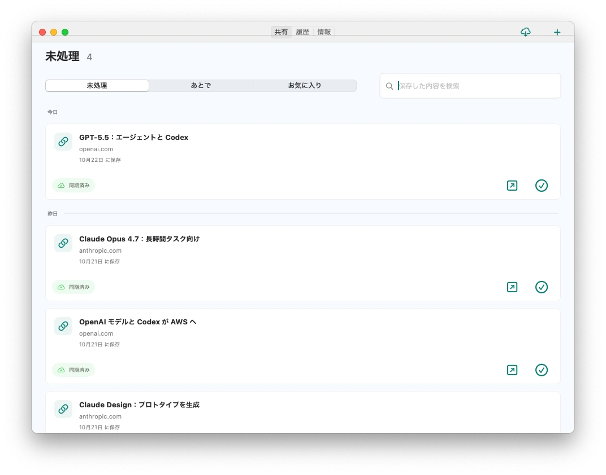
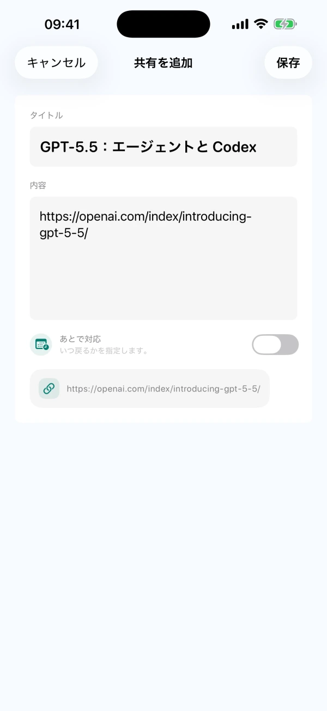
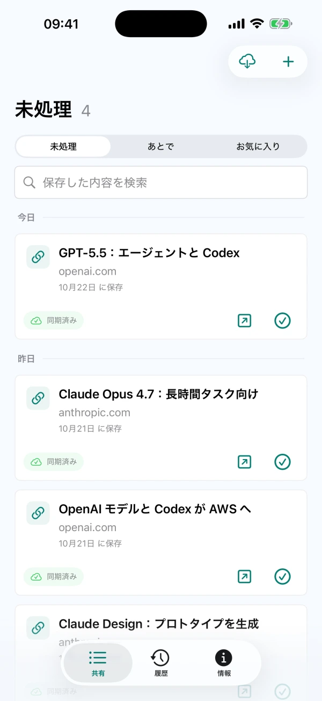

共有でも、手入力でも
対応アプリの共有メニューからテキスト、リンク、画像を保存。CarryOver でアイデアを直接入力することもできます。
スマホの共有メニューから保存。Mac で元のページを開いて、あとで取り組めます。
iPhone、iPad、Mac 用の CarryOver は App Store から入手できます。


iPhoneiPadMac
リンクや投稿、アイデアを CarryOver へ
未処理の内容は受信トレイに残ります

元のページを開いて、処理を完了
対応アプリの共有メニューからテキスト、リンク、画像を保存。CarryOver でアイデアを直接入力することもできます。
未処理の内容は保存から何日経っても受信トレイに残ります。実際に処理したら完了にしましょう。
Mac のメインウインドウでタイトル、本文、元の URL を検索。受信トレイと履歴の両方が対象です。
完了した内容は履歴へ。必要なときは受信トレイに戻して、続きを進められます。
日時を設定してシステムの通知を許可。通知をタップすると、保存した内容を開けます。
同じ Apple Account の iPhone、iPad、Mac 間で iCloud 同期。ネットワークや iCloud の状態によって同期が遅れる場合があります。
現在のバージョンには1日の保存回数の制限はなく、別途 Pro にアップグレードする必要もありません。お住まいの地域での提供状況と価格は App Store でご確認ください。 ヘルプを読む